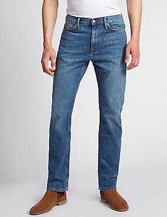

1.kaos
Kaos oblong atau disebut juga sebagai T-shirt adalah jenis pakaian yang menutupi sebagian lengan, seluruh dada, bahu, dan perut. Kaus oblong biasanya tidak memiliki kancing, kerah, ataupun saku. Pada umumnya, kaus oblong berlengan pendek (melewati bahu hingga sepanjang siku) dan berleher bundar. Bahan yang umum digunakan untuk membuat kaus oblong adalah katun atau poliester (atau gabungan keduanya) Mode kaus oblong meliputi mode untuk wanita dan pria, dan dapat dipakai semua golongan usia, termasuk bayi, remaja, ataupun orang dewasa. Kaus oblong pada mulanya digunakan sebagai pakaian dalam. Sekarang kaus oblong tidak lagi hanya digunakan sebagai pakaian dalam tetapi juga sebagai pakaian sehari-hari.

2.celana
Celana adalah pakaian luar yang menutup pinggang sampai mata kaki, kadang-kadang hanya sampai lutut, yang membungkus batang kaki secara terpisah, terutama merupakan pakaian lelaki. Ada dua kategori umum dari Celana: Celana pendek (dengan ukuran dari pinggang sampai lutut atau kurang) Celana panjang (dengan ukuran dari pinggang sampai tumit)

3. jaket
Jaket adalah baju luar yang panjangnya hingga pinggang atau pinggul, dipakai untuk menahan angin dan cuaca dingin. Bukaan jaket terletak di bagian depan dari leher ke bawah. Ritsleting, kancing, atau sabuk dipakai sebagai alat untuk membuka dan menutup bukaan jaket. Mantel lebih panjang dari jaket, biasanya panjang mantel mulai dari sekitar pantat hingga sampai di bawah lutut. Dalam bahasa Inggris, istilah jacket juga berarti jas, dan tidak hanya mencakup jaket menurut pengertian bahasa Indonesia (jaket olahraga atau jaket kulit). Berbeda dari kemeja atau blus yang dibuat dari kain tipis, jaket dibuat dari kain tebal dan sering diberi kain pelapis dan bahan penghangat di bagian dalam seperti bulu-bulu harus burung atau bulu angsa. Tidak seperti kemeja atau blus, jaket tidak dipakai untuk langsung bersentuhan dengan kulit. Oleh karena itu, jaket tidak perlu dicuci atau tidak perlu sering dicuci. Sebagian besar jaket juga dibuat dari bahan yang tidak dapat dicuci.